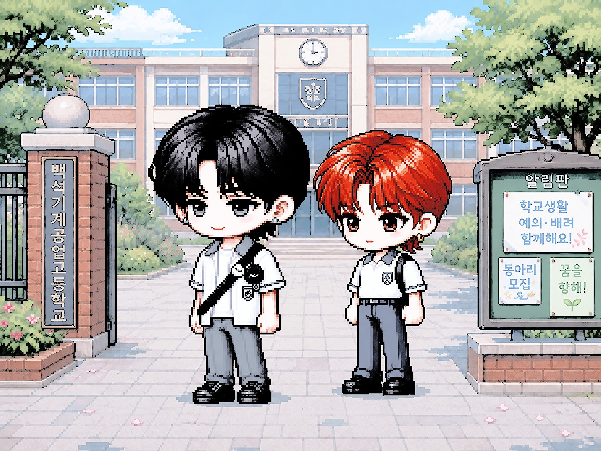
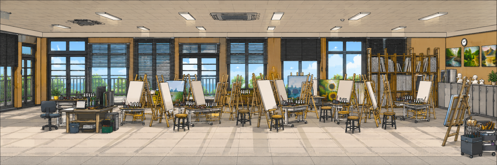

To. 나의 행성에게
완전한 공전 두 바퀴를 이룩한 지금은
숨을 쉴 때마다 시선을 돌릴 때마다 도처에 네가 있다.
나의 일상을 빼곡하게 채우고 있는 너에게
매 순간 사랑과 감사함을 느껴.
앞으로도 너의 궤도를 충실히 운행하는 위성으로서
네 곁에 머물고 싶다.
이 지난한 여름을, 가을을, 다가올 겨울을 함께 보내고 싶다.
나의 모든 하루에 함께해 줘.
감히 부탁할게.
사랑해.
2026.08.04.
너의 위성이

교정을 돌아다니며 분실한 물건을 찾으세요.
캐릭터마다 찾아야 할 물건이 다릅니다.
미술실 곳곳을 탐색해 보세요.0
